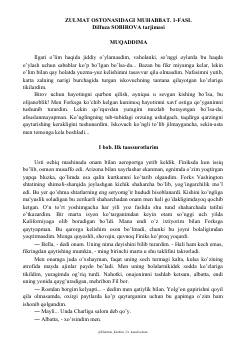

ZOBella Svonning Forks shaharchasidagi sirli va xavfli muhabbat hikoyasi.
Bella Svon o'zining quyoshli Finiks shahridan yomg'irli Forks shaharchasiga, otasining oldiga ko'chib o'tadi. U yerda u o'z hayotini butunlay o'zgartirib yuboradigan sirli Edvard Kallen bilan tanishadi. Bu asar mashhur 'Twilight' (Alacakaranlık) romanining o'zbek tilidagi tarjimasidir.